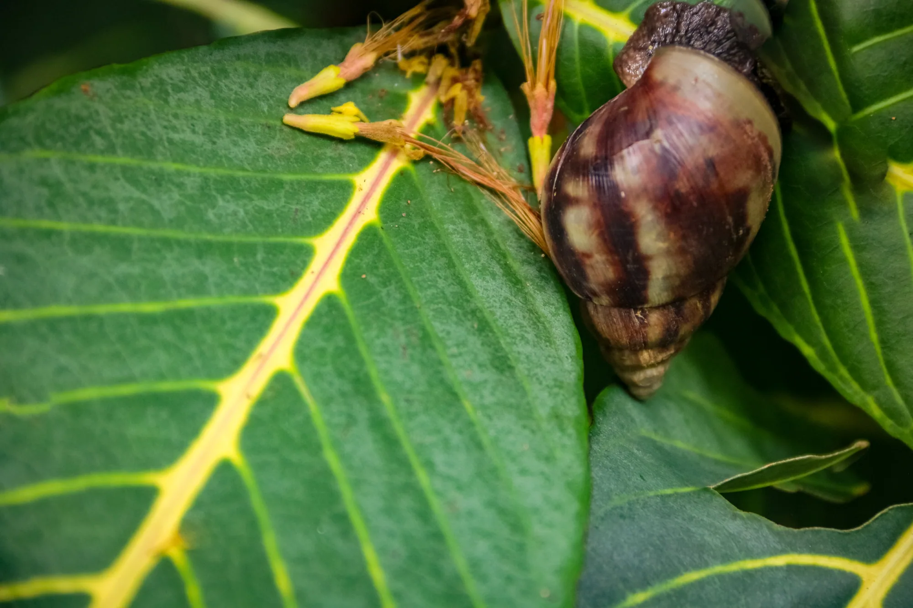

← All galleries
Close-Up & Details
Textures, drops of water, shapes, and small subjects that become worlds of their own.
10 selected photographs
← Back to portfolio
A tiny world1 / 10
Swipe the photographs sideways or use the arrows. Tap the large image to see it full screen.
Keep exploring